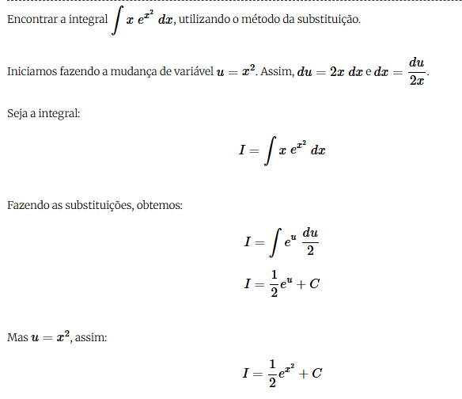

Integrais por Substituição.

O método de integração por substituição, ou método de mudança de variável, é um dos métodos de integração mais poderosos. É originado pela regra da cadeia para derivadas de funções compostas.
O objetivo é transformar uma dada integral que em princípio parece complicada de calcular em uma mais simples, que pode ser resolvida.
Geralmente, quando fazemos a substituição, utilizamos a letra u, mas pode ser qualquer outra, v, z, por exemplo.
Dicas
-
Identifique uma função composta
O método da substituição é muito útil quando a integral envolve uma função composta (como uma função dentro de outra função), e você pode substituir essa função para simplificar a integral.
-
Escolha uma substituição inteligente
Geralmente, a substituição envolve uma expressão que aparece na integral e que, quando derivada, resulta em outra parte da integral.
-
Simplifique a integral
Após a substituição, a integral deve se tornar mais simples. Se você conseguir expressar a integral apenas em termos de 𝑢, poderá resolvê-la de forma mais direta.
-
Substitua 𝑢 de volta para 𝑥
Depois de resolver a integral em termos de 𝑢, não se esqueça de substituir 𝑢 de volta para 𝑥, caso esteja trabalhando com uma integral indefinida.